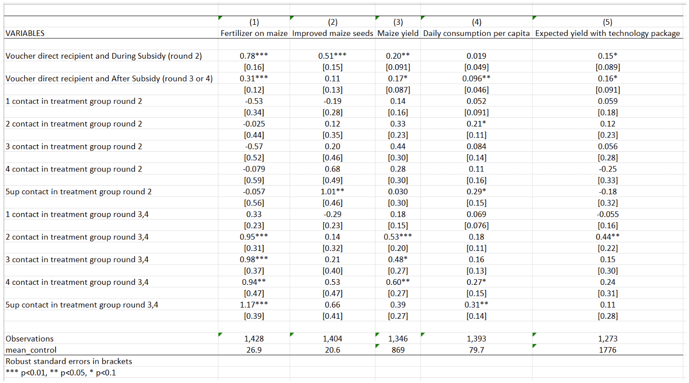

4.1 Equality of opportunity and human capital accumulation: Motivational effect of a nationwide scholarship in Colombia
Rachid Laajaj, Andrés Moya, Fabio Sánchez, Equality of opportunity and human capital accumulation: Motivational effect of a nationwide scholarship in Colombia, Journal of Development Economics, Volume 154, 2022, 102754, ISSN 0304-3878, .https://doi.org/10.1016/j.jdeveco.2021.102754
[Link to the full original replication package paper from Open ICPSR]
Highlights
The research question of this paper is the following: How did the opportunity to receive a scholarship influence the performance of low-income students in the national exit and 9th grade exams, and their university enrollment rates?
This replication exercise will deal with the quasi-experimental Regression Discontinuity Design (RDD) method, with an eligibility cutoff and a linear function (and its extension in the form of difference-in-discontinuities model).
This methodology is applied in this context because the scholarship eligibility is based on an eligibility threshold, which allows the authors to compare similar students and thus, avoid the issue of selection on unobservable.
The special feature of this study is the combination of the regression discontinuity design extension, with the quantile regression method.
Throughout this replication exercise, we provide a detailed explanation of the original replication package.
Through this exercise, you will learn many tricks on Stata:
- How to present your results in academic tables, by using the packages
estoutandoutreg2 - How to use bandwidths in a regression, here the optimal bandwidth from Calonico et al. (2014) using the
rdrobustpackage - How to run multiple loops within another loop
- How to use the
grc1legpackage to merge different graphs in only one figure, using an online package - How to conduct regression discontinuity analysis using the package
rddensity, and more specifically to test for manipulation (Cattaneo et al., 2018)
- How to present your results in academic tables, by using the packages
4.1.1 Before we start
If you wish to replicate yourself, you will need to download the original dataset SPP_ready.dta from the original replication package.
Then, follow these instructions:
Set the directory where you have stored the dataset SPP_ready.dta and where you will store your datasets and results:
cd "put here your own working directory"
*Data Preparation
use "SPP_ready.dta", clear
*keep only the variables we need for the replication
keep ranking eligible_post eligible non_eligible post sisben sisben_eligible sisben_post sisben_eligible_post area_ciudades area_urbano icfes_padre_nivel1 icfes_padre_nivel2 icfes_padre_nivel3 icfes_madre_nivel1 icfes_madre_nivel2 icfes_madre_nivel3 edad sexo_sisben departamento_cod_* saber_rk_col area_sisben_dnp puntaje_sisben_dnp year
*rename the variables
rename area_ciudades cities
rename area_urbano other_urban
rename icfes_padre_nivel1 father_educ_prim
rename icfes_padre_nivel2 father_educ_second
rename icfes_padre_nivel3 father_educ_high
rename icfes_madre_nivel1 mother_educ_prim
rename icfes_madre_nivel2 mother_educ_second
rename icfes_madre_nivel3 mother_educ_high
rename edad age
rename sexo_sisben sex
rename area_sisben_dnp area_sisben
rename puntaje_sisben_dnp score_sisben
rename saber_rk_col saber_avg_school
*change labels for the variable area_sisben
label define new_labels 1 "14 Main Cities" 2 "Urban Rest" 3 "Rural"
label values area_sisben new_labels
*use a loop to rename several variables
forval i = 1/33 {
local oldvar "departamento_cod_`i'"
local newvar "department_`i'"
rename `oldvar' `newvar'
}
gen status_eligible= 1 if non_eligible == 0 & post ==0
replace status_eligible= 2 if non_eligible == 1 & post ==0
replace status_eligible = 3 if non_eligible == 0 & post ==1
replace status_eligible = 4 if non_eligible ==1 & post ==1
label define status_eligible_labels 1 "Need-based Eligible 2013-2014" 2 "Non-Eligible 2013-2014" 3 "Need-based Eligible 2015" 4 "Non-Eligible 2015"
* Apply the labels to the categorical variable
label values status_eligible non_eligible_post_labels
drop non_eligible
label variable score_sisben "Score Sisbén DNP"
label variable area_sisben "Area Sisbén DNP"
label variable father_educ_prim "Father's primary education"
label variable father_educ_second "Father's secondary education"
label variable father_educ_high "Father's high school education"
label variable mother_educ_prim "Mother's primary education"
label variable mother_educ_second "Mother's secondary education"
label variable mother_educ_high "Mother's high school education"
label variable sex "Sex"
label variable cities "14 Main Cities"
label variable other_urban "Other cities"
label variable ranking "Ranking Saber test"
label variable sisben "Distance to the threshold"
label variable post "Before or after SPP"
label variable eligible "Eligibility"
label variable eligible_post "Treated or not"
label variable status_eligible "Student's status"
label variable saber_avg_school "Saber average score of middle school"
save "dataset_LMS.dta", replace // save the dataset created in a new fileYou will also have to install a few packages and set up a global listing the control variables used in the regressions.
** Necessary packages to run the code:
ssc install estout, replace
ssc install outreg2, replace
ssc install rdrobust, replace
net install grc1leg.pkg, replace
ssc install rddensity, replace
**Set a global for all the control variables used in regressions
global controls cities other_urban father_educ_prim father_educ_second father_educ_high mother_educ_prim mother_educ_second mother_educ_high age sex department_1-department_32 saber_avg_schoolNow you can open the dataset:
4.1.2 Introduction
In 2014, a scholarship named Ser Pilo Paga (SPP), meaning “Being a Good Student Pays Off”, was introduced in Colombia in order to allow meriting students coming from low- income households to go to high-quality universities by funding their entire undergraduate education and living expenses.
The eligibility for this scholarship is based on two criteria. First, students must come from a household that scored below a certain cutoff on the Sisbén index, which is a socioeconomic index. Second, students must have scored above a given cutoff on the Saber 11, which is the national high school exit exam.
Data on the Sisbén scores are available at the Department Nacional de Planeacion, and the information on the Saber 11 test scores is provided by the Instituto Colombiano para el Fomento de la Educación Superior.
This paper analyzes the motivational effect of this scholarship on three dimensions: the students’ performances at the Saber 11, the enrollment rates in high-quality universities and the students’ performances at the Saber 9 to test for the ex-ante motivational effect.
This replication paper exercise will be focused on the effect of the SPP on the students’ test scores at the Saber 11. The authors used a difference-in-discontinuities model, an extension of the Regression Discontinuity Design (RDD) approach. The latter consists in estimating a local average treatment effect around a given cutoff to compare individuals with similar characteristics and be able to attribute the difference in outcomes to the only effect of the treatment. The difference-in-discontinuities extension allows studying the differences around a discontinuity threshold as in a standard RDD, and at two different time periods. Here, the authors study the discontinuity around the need-based eligibility cutoff, comparing students just below and above the threshold, two and ten months after the introduction of SPP.
Together with quantile regression, the authors are able to show a positive and significant effect of the SPP concentrated at the top of the distribution (from the 70th percentile), emphasizing the SPP’s contribution to a reduction in socioeconomic achievement gap between eligible and non-eligible students.
Throughout a replication exercise of the article by Laajaj, Moya and Sánchez, the following aims at providing an explanation of the main insights of the Regression Discontinuity Design and Quantile Regression frameworks, as well as some methodological and code explanation to improve your Stata skills.
4.1.3 Main strategies explanation: Regression Discontinuity Design and Quantile Regressions
4.1.3.1 Regression Discontinuity Design
The Regression Discontinuity Design is a method that leverages a natural experiment, utilizing a threshold or cutoff point to determine who receives treatment. The core idea is to compare the outcomes of individuals who receive treatment to those who do not by examining both sides of this threshold. The running variable X assigns observations to treatment given the cutoff value C. Here, the RDD takes the form of a standard eligibility cutoff with a linear function. Though, in other RDD settings, you might encounter spatial RDD with a border as threshold (Black, 1999) or Regression Kink Design, with a discontinuity showing a kink in the treatment variable (Card et al., 2015).
The key identifying assumption here is that individuals situated just above or below the threshold share similarity in all aspects except for the treatment they are subjected to. This assumption enables researchers to attribute disparities in results solely to the treatment, sidestepping the issue of selection bias.
To extrapolate the discontinuity, one needs to set up a window called bandwidths, containing the treated and control units.
There are two main designs within RDD: the sharp design and the fuzzy design.
In the sharp design, the treatment assignment is a deterministic function of the running variable X. Units are either treated or not, depending on whether they fall on one side or the other of the threshold.
In the fuzzy design, the treatment assignment is not strictly determined by the threshold, there can be instances of imperfect compliance. The probability of receiving treatment might jump at the threshold. Some units may not receive treatment even if they were expected to, and vice versa.
To identify the treatment effect at the discontinuity, one needs to specify the potential outcomes model as a flexible function of the running variable. The specification of the functions is empirically important, as it needs to be flexible enough to get the functional form of the relationship between the outcome variable and the running variable.
In our paper, the authors are using a standard eligibility cutoff, in a sharp design, estimating the change in ranking of the national high school exit exam (Saber 11) after the introduction of a merit- and need-based scholarship in Columbia (SPP). The treatment is a specific cutoff on the Sisbén (the socioeconomic index used by the government to target subsidies and social programs): students coming from low-income households under the cutoff are eligible and those above are not eligible. The authors are using a linear function for the functional form of the relationship between Sisbén and the ranking. The Sisbén cutoff is based on the households’ geographic location:
- 57,21 for the 14 main cities
- 56,32 for other urban areas
- 40,75 for rural areas
The running variable here is the distance between the student’s Sisbén score and the need-based eligibility cutoff. Students taken into account in the study are assumed to be similar, the only difference being the threshold and thus the possibility of receiving the scholarship or not ex-post.
To isolate the confounding effect of other social programs established prior to SPP sharing the same eligibility cutoffs, the authors use the difference-in-discontinuities extension of the RDD. This method allows the authors to study, around the need-based eligibility cutoff, the motivational effect of SPP by comparing two time periods. The model was introduced by <a href=” https://doi.org/10.1257/app.20150076 target=“_blank”>Grembi et al. (2016).
The difference-in-discontinuities estimate compares two cohorts: the 2015 cohort, composed of students who passed the Saber 11 exam in 2015, 10 months after the implementation of SPP, and the 2014 cohort that comprises students who passed the Saber 11 exam only two months after the implementation of SPP. The 2014 cohort is taken as a control group: since SPP was launched for the first time not long before their Saber 11 exam, their motivation and results cannot be influenced by the program itself. However, the program can be considered as a credible signal for 2015 students, hence the comparison in the motivational effect of SPP between eligible and non-eligible students (on both sides of the threshold), two months after SPP implementation (2014 students, post=0) and ten months after (2015 cohort, post=1).
4.1.3.2 Quantile Regression
In addition to their RDD specification, the authors are testing for heterogeneous effects of the scholarship program on students with different test scores in Saber 11 using quantile regressions. While an OLS model is minimizing the sum of squared residuals, the quantile regression model minimizes the objective loss function (sum of absolute weighted deviations). Contrary to OLS, there is no explicit solution for this minimization. Thus, it should be done numerically via the simplex method (a method using iterations). This explains why, each time you run a quantile regression code, the Stata software will display several successive iterations in the “Results” window before displaying the final regression result (see image below).
They regress the test scores (variable “ranking”) on the scholarship eligibility for students who passed the Saber 11 exam after the introduction of SPP (variables “eligible” and “eligible_post”) and the running variable (variable “sisben”) at the 25th , 50th, 75th and 90th percentiles. This method has the advantage of studying the effect of a treatment on the entire distribution of interest, not only on its conditional mean. In this paper, this method is crucial because the authors find no motivational average effect of the SPP on the Saber 11 test scores, while they find a positive effect starting from the 75th percentile. These results can be explained by the level of the merit-based cutoff. Indeed, as this ranking cutoff is away from the median, students at the bottom of the distribution will feel discouraged and give up as it would require too much effort to try reaching it.
4.1.4 Descriptive statistics - Replication of Table 1 and Figure 4
4.1.4.1 Main insights of descriptive statistics
It is essential to run some descriptive statistics at every stage of a research project. Descriptive statistics play a crucial role in an econometric regression framework by providing a comprehensive summary of the data under consideration. By depicting the key insights and trends of the variables of interest, they serve to demonstrate the motivation behind the analysis, and provide justification for the chosen empirical strategy. Good descriptive statistics should also highlight the main results, ensuring the alignment of the research in the intended direction. Descriptive statistics also serve as an initial step in exploring the dataset, verifying the coherence of values and identifying any potential missing data issues.
The command summarize in Stata shows you directly the mean, standard deviation, minimum, and maximum of the desired variables. However, descriptive statistics can also take the form of a graph depicting the correlation between two variables of interest, a figure, a map or even non-causal regressions. Nevertheless, whatever the form it adopts, the primary focus should remain on data visualization: descriptive statistics must be clear, and allow us to catch the main information very quickly.
4.1.4.2 Replication of Table 1 - Average rank of eligible and non-eligible students in the Saber 11
Replication of the means for average and quantiles scores using tabstat and the package estout
The paper presents different sets of descriptive statistics. The focus is on replicating Table 1, which displays the average rank of eligible and non-eligible students in the Saber 11 test two months after the implementation of SPP (2013-2014 cohort) and ten months after (2015 cohort). It also details the rank of students at the 25th, 50th, 75th, and 90th percentiles within each group.
The replication of Table 1 will take place in two steps: first, the replication of rows (1), (2), (4) and (5) of parts A and B of the table and then row (7) from part C.
At the end of this part 1 of the replication exercise, you should have the following .txt output of Table 1, parts (A) and (B).
 The first part of Table 1 (rows (1), (2), (4) and (5) of parts A and B) displays the means for averages scores and for each quantile (25, 50, 75, 90). To replicate it, you will use the
The first part of Table 1 (rows (1), (2), (4) and (5) of parts A and B) displays the means for averages scores and for each quantile (25, 50, 75, 90). To replicate it, you will use the tabstat command with the “status_eligible” variable.
With the tabstat command, you can select the desired statistics of the “ranking” variable with statistics, in this case the number of observations (N), the mean, the quantiles p25, p50, p75 and p90 (q and p90).
To do so, you will first need to save it with the estpost command, with the name of your choice (here: A).
The estpost, eststo and esttab commands are available in the estout package.
ssc install estout
eststo A: estpost tabstat ranking, by(status_eligible) statistics(N mean q p90) columns(statistics) tabstat displays summary statistics (here the number of observations, the mean and the 25th, 50th, 75th and the 90th quantiles).
Then, you can export it in the desired format with esttab (here .txt) with the desired features:
fmt(1)gives the desired number of decimal places,labelgives the name of the labels in the output table,varwidth(30)gives the width of the column containing the variable names.
Replication of the descriptive diff-in-diff in average and by quantile, using outreg2
To replicate the last part of table 1, row (7) of part C, which is the descriptive diff-in-diff in average then by percentile, you will do it in two steps:
Step 1: Run a basic diff-in-diff regression of ranking on the variables “eligible_post”, “eligible” and “post” and export it in excel format
Once the regression is estimated, we can use the command outreg2 to report the regression outputs from Stata into Excel, Word, Latex or any other format. It gives you the type of presentation found in academic papers. To use it, you have to install the package outreg2 first.
ssc install outreg2
outreg2 using "descr_DiD_.xls", label ///
ctitle("Average Rank") replace less (1)Step 2: Run the same regression but in quantiles, using a loop for each quantile, and then export it in an excel format (.xls) and append it to the basic diff-in-diff table you got in Step 1.
foreach j in .25 .50 .75 .90 {
qreg ranking eligible_post eligible post, q(`j') vce (robust)
outreg2 using "descr_DiD_.xls", ///
ctitle(`j') append less (1)
}At the end of this part 2) of the replication exercise, you should have the following .xls output of Table 1, part (C).

The following results can be drawn from the table:
First, non-eligible students have in general a better ranking than eligible, revealing the importance of targeting this subpopulation. (Part A and B of table 1).
Then, there is a reduction of the gap between eligible and non-eligible students after the implementation of SPP (by calculating the difference between non-eligible’s rank and eligible’s rank). This suggests a potential positive motivational effect of the program on students’ results.
With a simple difference-in-differences regression, the authors compute the significance of the gap reduction (part C of table 1). The gap reduction is much more important from the 75th percentile of the distribution, suggesting that even with an effect at the average, the impact of SPP is only significant for students ranked at the top of the distribution.
Two main conclusions can be drawn from this table:
It provides support for estimating a causal effect of SPP on motivation, by comparing eligible and non-eligible students.
It highlights the interest of a quantile regression to study the potential heterogeneous treatment effect at different points of the distribution of ranking.
4.1.4.3 Replication of Figure 4 - Graphical representation of the Regression-in-Discontinuities estimators on average effect, and at each quantile
- Data preparation: defining some scalars and creating bins
- Prepare the OLS (average) estimation depicted in the graph
- Prepare the quantile estimations depicted in the graph
- Collapse data to keep only one observation per bin
- Construct the OLS average graph and its confidence intervals
- Construct the quantile graphs and their confidence intervals
- Merge the five graphs into one figure using the grc1leg package
### Main results - Replication of Table 3
#### Bandwidths calculation 23 #### Regression at the eligibility cutoff and saving the results with outreg2 command
#### Quantile regressions with qreg command ### Robustness check - Replication of Figure A2 #### Test for manipulation around the eligibility cutoff using the rddensity package
#### Replication of the chart for the 14 major cities, then for urban and rural using twoway
#### Combination and exportation of the three graphs together
This study examines the impact of a one-off input subsidy program implemented in Mozambique in 2010 within the context of the Green Revolution and the Alliance for a Green Revolution in Africa. While the Green Revolution transformed Asian and Latin American agriculture, Sub-Saharan Africa lagged behind. In response, the Maputo Declaration (2003) committed African nations to invest 10% of their budgets in agriculture. Launched in 2006, the Alliance aimed to catalyze the Green Revolution in Africa through input subsidy programs (ISPs), providing technologies at discounted rates to randomly selected farmers. Focusing on Mozambique’s 2010 Programa de Suporte aos Produtores, this paper not only assesses subsidy impacts on 704 farmers but also explores post-subsidy persistence and spillover effects through social networks. Findings reveal increased technology adoption, sustained maize yield growth post-program, and notable impacts on farmers’ networks. The program also fostered enhanced beliefs about technology returns, mitigating information-related market failures.
4.1.5 Replication of Table 2 - Regressions with spillover effects
This table (Table 2 in the paper) is the output you will get from the code we explain below.

Table 2 examines the impact of the government-implemented input subsidy program (ISP) on various agricultural outcomes: fertilizer use on maize, adoption of improved maize seeds, maize yield, daily consumption per capita, and expected yield with the technology package. The objective of this analysis is to determine whether the ISP has a positive and statistically significant impact on the use of fertilizer on maize and on maize yields, measured as average maize yield per hectare.
How to read this table. The first two lines of this table present the program’s results estimated on treated farmers (those who received the subsidy). The effects of the program are assessed both during and after the ISP implementation. This table reveals that the program has a positive impact on all farmers’ outcomes, both during and after the program. The effects are more pronounced during the treatment period for fertilizer use, improved maize seeds, and maize yields.
The next lines present the impact of the ISP on social network spillovers, which is estimated on members of treated farmers’ social networks during (round 2) and after (rounds 3 and 4) the treatment period, respectively. The general pattern observed is that the coefficients for social network variables are positive and significant in the post-intervention period but not in the intervention period. The magnitude of the coefficients increases as the number of social network contacts in the treatment group increases from one to two, and then stabilizes. This pattern suggests that the effect of social networks on technology adoption and yield increases sharply at two or more social network contacts in the treatment group. For example, after the program, having one contact in the treatment group increases maize yield by 0.18 kilogram per hectare, while having two contacts increases maize yield by 0.53 kilogram per hectare. This substantial increase in yield with two or more social network contacts justifies the authors’ estimation of spillover effects on individuals having above-median (two or more) social network members in the treatment group in Figure 2.
Replication code for Table 2
Data importation
After having downloaded the original dataset and saved this dataset under your working directory defined with command “cd” (for current directory), you can generate a shorter version of the dataset, named here Dataset_CLY.dta, for which we provide a detailed codebook.
*A/ Download and save data "Moz1234panel.dta" from: https://www.openicpsr.org/openicpsr/project/116761/version/V2/view?path=/openicpsr/116761/fcr:versions/V2.1/Rep-file-Moz-Input-Subsidy/data/original/Moz1234panel.dta&type=file
*B/ Set your working directory where Moz1234panel.dta already is:
cd "XXX" /*XXX=the directory where you just saved the 'Moz1234panel.dta' dataset*/
*C/ Create a shorter dataset:
use "Moz1234panel.dta", clear
* selecting the necessary avriables for replicating the Table 2, Figure 2, and Table A7
keep sn5up_sub_dur sn2up_sub_aft nw_talkedagmoder lfertmaizr sn2_sub_dur sn2up_sub_dur sn1_sub_aft lyieldr sn3_sub_aft lexp_yield_fertr vouch_aft_r3 sn2up_sub_aft_r3 limprovedseedsr vouch_aft sn1_sub_dur vlgid_round respid sn2up_sub_aft_r4 vouch_aft_r4 vouch_dur ldailyconsr sn3_sub_dur sn4_sub_aft sn5up_sub_aft sn4_sub_dur sn2_sub_aft fertmaizr vouch round
* exponentiation of the winsorized variables back to their original forms
foreach x in improvedseedsr yieldr dailyconsr exp_yield_fertr{
// it is necessary in order to add the means of the control to the table 2. This way it uses the value that is not Winsorized.
gen `x' = exp(l`x')
}
save "Dataset_CLY.dta", replaceTo start the replication, one should always start by deleting any potential data in memory using clear all. Then, open the dataset of interest, and the command use “…”, clear to indicate the dataset you want to import in Stata.
Because this project uses panel data, you need to inform Stata of the structure of the data. Use the command xtset to indicate that you are working with panel data, followed by the name of the variable you want to set as the panel variable. Here, vlgid_round is an identifier for every possible combination of locality and round.
clear all
use "Dataset_CLY.dta", clear
xtset vlgid_round
global sn_treatments sn1_sub_dur sn2_sub_dur sn3_sub_dur sn4_sub_dur sn5up_sub_dur sn1_sub_aft sn2_sub_aft sn3_sub_aft sn4_sub_aft sn5up_sub_aft Now, you want to modify the labels for a set of variables that were in log format in the original dataset, to indicate that they are in their original scale.
Start with creating a loop to iterate the same procedure over a set of variables, using the foreach command.
Stata trick: Then, you can easily modify the labels using variable label to extract the label for each variable in the loop, remove the text “log” from the label using subinstr, remove the excess spaces using trim, and update the variable label with the modified text.
Regressions, and table creation
You are now set to running the regressions and creating a table presenting results.
Stata trick: Start with initializing a local macro using local, named rep_app, and set its value to replace. The purpose of this macro is to control whether the replace option is used when exporting regression results in an Excel file using the command outreg2. In other words, it means that if the file already exists in your computer, it will be replaced.
Again, use a loop to iterate regressions over the same list of variables using foreach.
You want to apply several commands to the variables included in the loop only if they meet the following conditions: round==2 (survey round 2, that is, during the program) and vouch==0 (farmers who did not win the voucher, that is, the control group). Then:
qui sumcalculates the mean, and results are stored using the local commandaregruns a fixed effects regression on panel data, usingabsorbto absorb fixed effects, andclusterto take into account the intra-cluster correlationsoutreg2creates the regression table and saves it into an Excel file (.xls extension)
Then, create a nice table using key commands:
bracketgenerates brackets for standard errorslabelincludes variable labels in the results table to display full variable namesnocons,nor2, andnoniare used to avoid displaying the constant, the R-squared and missing values in the tableless(1)means that only the first row of the result table will be included (only the first regression)keepallows you to keep only the variables you wantadds()is used to add control variables into the brackets
foreach x in fertmaizr improvedseedsr yieldr dailyconsr exp_yield_fertr {
qui sum `x' if vouch==0 & round==2
local control_mean=r(mean)
qui xi: areg l`x' vouch_dur vouch_aft ${sn_treatments} i.nw_talkedagmoder*i.round, ///
absorb(vlgid_round) cluster(respid)
outreg2 using "table 2.xls", `rep_app' bracket label nocons noni ///
less(1) nor2 keep(vouch_dur vouch_aft ${sn_treatments}) adds(mean_control,`control_mean')
local rep_app = "append"
}4.1.6 Replication of Figure 2 - Direct and Spillover Impacts of Subsidies
This figure (Figure 2 in the paper) is the output you will get from the code we explain below.

This figure highlights the Intention-to-Treat estimates through the direct and indirect effects on five outcomes of the subsidy program on the farmers and on their social networks. The outcomes of interest include the adoption of fertilizer and adoption of improved maize seeds, the maize yields, the consumption of the household (an indirect measure of agricultural profit), and the expected yields to the technology package. In this figure, indirect effects are estimated on individuals having at least two contacts in the treatment group, because they are the ones for whom effects are the largest, as demonstrated in Table 2.
How to read this figure. The coefficient of the regressions of interest are represented with dots, while the lines represent 95 percent confidence intervals.
Direct impacts of the subsidies on the voucher recipient group are estimated for all five outcomes for both the “during” (subsidized) and the “after” (post-subsidy) periods. The Figure shows that the program had a large and significant impact during the subsidy period on the adoption of fertilizers and improved seeds, also allowing for higher maize yields. The effects on consumption were only significant after the subsidy period. Yield expectations were stable across periods for treated farmers. While the effect on fertilizer use decreases in magnitude after the subsidy period, it remains substantial and statistically significant. The impact on agricultural yields also persists over time.
Regarding spillover effects, impacts of the program are positive and significant on the adoption of fertilizers, on improved seeds, maize yields, and expected returns to the technology package.
Replication code for Figure 2
Data preparation and confidence intervals calculation
So far, a lot of modifications have been made to the variables. To construct the figure, you need the original data, without saving the transformations to the variables made until now.
Install the parmest package that allows for semi-parametric estimation of partially linear models.
Then, regress the outcome variables on the treated individuals (farmers who won the vouchers) and on individuals who have at least two contacts in the treatment group. Regressions are run separately for each of the five outcomes, using a loop - see section 1.2.2 for more information on how to create a loop.
Cluster the standard error at the level of respid (respid is the variable for the respondent’s identifier, that is, cluster at the individual level), and use parmest to save the regression results in the .dta format. For each variable, you will obtain the estimated coefficients and standard errors for the periods during and after the program, for treated farmers and those with at least two contacts in the treatment group.
foreach x in lfertmaizr limprovedseedsr lyieldr ldailyconsr lexp_yield_fertr {
qui xi: reg `x' vouch_dur vouch_aft sn2up_sub_dur sn2up_sub_aft ///
i.nw_talkedagmoder*i.round i.vlgid_round, cluster(respid)
parmest, saving(`x', replace)
}To generate the final figure, you must create a new dataset. To do so, you need to iterate through variable names and perform certain operations on our variables.
First, use the local command to define a local macro y with a value of 1.
Then create a loop using foreach which includes our variables of interest. Then, apply the following commands on variables in the loop:
use `x'.dta loads the dataset corresponding to the variables in the loop- use the command gen to create a time variable using the observation number (_n), drop the observations for which time is greater than 4 using
drop - This graph aiming to generate a visually informative figure by plotting mean estimates along with their corresponding 95% confidence intervals for a set of variables. Only keep the variables estimate, stderr and time
- Use the
roundcommand to round the values of the variables to 2 decimal points - Generate, using
gen, two new variables with missing values which capture the estimates of each regression after the treatment and the standard error of these coefficients (respectfully estimate_NV and sd_NV, followed by the value taken by y). The commandreplaceallows us to assign specific values to the new variables. - With the command
rename, include a suffix based on the local macroy’to the selected variables. - Drop all periods after round 2 because you only want the first two periods in the figure
- Creating a
localy equal to y + 1, increment y to the next rank to move on to the next variable estimate_Vy+1 and estimate_NV+1
Eventually, save the variables created with the command save.
local y = 1
foreach x in lfertmaizr limprovedseedsr lyieldr ldailyconsr lexp_yield_fertr {
use `x'.dta
gen time=_n
drop if time>4
keep estimate stderr time
replace estimate=round(estimate,0.01)
replace stderr=round(stderr,0.01)
gen estimate_NV`y'=.
replace estimate_NV`y'=estimate[3] in 1
replace estimate_NV`y'=estimate[4] in 2
gen sd_NV`y'=.
replace sd_NV`y'=stderr[3] in 1
replace sd_NV`y'=stderr[4] in 2
rename estimate estimate_V`y'
rename stderr sd_V`y'
local y = `y'+1
drop if time>2
save, replace
}Merge the quantity of fertilizer used with each variable of interest (again, using a loop) based on the time variable.
use lfertmaizr, clear
foreach x in limprovedseedsr lyieldr ldailyconsr lexp_yield_fertr{
merge 1:1 time using `x'.dta, nogen
save figure2.dta, replace
}Clear existing matrices and results in Stata’s memory, and load the dataset named “figure2.dta”.
Calculate lower and upper limits of the 95% confidence interval:
- Create a foreach loop to iterate over a list of variables(V1, V2, …, NV5).
- Use the mean estimate (
estimate_) and standard deviation (sd_) to calculate the lower and upper bounds of the 95% confidence interval for each variable by subtracting 1.96 times the standard deviation from the values taken by each variable in the loop. - Set the upper limit to 1 if it’s greater than 1, in other words, substitute 1 for any variable value exceeding 1.
- Create a matrix with
mkmatto store the results (estimate, lower limit, and upper limit) for each variable in the loop.
Package installation and graph style settings
These preprocessing steps are crucial for ensuring accurate and visually compelling representations of the estimated coefficients with their associated confidence intervals. The resulting figure is a valuable tool for conveying the uncertainty surrounding the mean estimates, aiding in the interpretation and communication of statistical findings.
Install and initialize additional packages (grstyle and coefplot) for graph styling and coefficient plotting.
Set graph style settings, such as background color and major grid color.
Graph creation and exportation
The command coefplot creates a graphic displaying the coefficients of the regression and the confidence interval.
- matrix selects the values to be used for the graph in the matrix.
- ci selects the upper and lower bounds of the confidence interval
- msize is used to select the size of the graph lines.
- xline(0, lpattern(solid) lw(thick)) adds a vertical line to the x-axis at position 0, with a line style of “solid” and a line thickness of “thick”.
- xlabel(-0.5(0.5)1) adds axis labels from -0.5 to 1, with a step of 0.5.
- bylabel is used to define labels and byopts is used to define the chart title.
- ciopts(lwidth(thick thick)) defines the line thickness for confidence interval.
Reproduce 5 times this process for each variable, during and after the treatment.
coefplot /*
*/ (matrix(V1[,1]), ci((V1[,2] V1[,3])) msize(large) xline(0, lpattern(solid) lw(thick)) ///
xscale(range(-0.5(0.5)1)) xlabel(-0.5(0.5)1)) || /*
*/ (matrix(NV1[,1]), ci((NV1[,2] NV1[,3])) msize(large) ///
xline(0, lpattern(solid) lw(thick)) xscale(range(-0.5(0.5)1)) xlabel(-0.5(0.5)1))|| /*
*/ ||, bylabel( ) byopts(title("Fertilizer on maize")) xsize(2) scale(1.35) ///
ylabel(,labsize(vlarge)) ciopts(lwidth(thick thick)) /*
*/ coeflabels(r1="During" r2="After" ) mlabel mlabposition(1) mlabsize(vlarge) ///
format(%04.2f) name(fertilizer)
coefplot /*
*/ (matrix(V2[,1]), ci((V2[,2] V2[,3])) msize(large) xline(0, lpattern(solid) lw(thick)) ///
xscale(range(-0.5(0.5)1)) xlabel(-0.5(0.5)1)) || /*
*/ (matrix(NV2[,1]), ci((NV2[,2] NV2[,3])) msize(large) ///
xline(0, lpattern(solid) lw(thick)) xscale(range(-0.5(0.5)1)) xlabel(-0.5(0.5)1)) || /*
*/ ||, byopts( title("Improved maize seeds")) bylabel( ) xsize(2) scale(1.35) ///
ylabel(,labsize(vlarge)) ciopts(lwidth(thick thick)) /*
*/ coeflabels(r1="During" r2="After" ) mlabel mlabposition(1) mlabsize(vlarge) ///
format(%04.2f) name(improved)
coefplot /*
*/ (matrix(V3[,1]), ci((V3[,2] V3[,3])) msize(large) xline(0, lpattern(solid) lw(thick)) ///
xscale(range(-0.5(0.5)1)) xlabel(-0.5(0.5)1)) || /*
*/ (matrix(NV3[,1]), ci((NV3[,2] NV3[,3])) msize(large) ///
xline(0, lpattern(solid) lw(thick)) xscale(range(-0.5(0.5)1)) xlabel(-0.5(0.5)1))|| /*
*/ ||, byopts( title("Maize yield")) bylabel( ) xsize(2) scale(1.35) ///
ylabel(,labsize(vlarge))ciopts(lwidth(thick thick) ) /*
*/ coeflabels(r1="During" r2="After" ) mlabel mlabposition(1) mlabsize(vlarge) ///
format(%04.2f) name(yield)
coefplot /*
*/ (matrix(V4[,1]), ci((V4[,2] V4[,3])) msize(large) xline(0, lpattern(solid) lw(thick)) ///
xscale(range(-0.5(0.5)1)) xlabel(-0.5(0.5)1)) || /*
*/ (matrix(NV4[,1]), ci((NV4[,2] NV4[,3])) msize(large) ///
xline(0, lpattern(solid) lw(thick)) xscale(range(-0.5(0.5)1)) xlabel(-0.5(0.5)1)) || /*
*/ ||, byopts( title("Consumption")) bylabel( ) xsize(2) scale(1.35) ///
ylabel(,labsize(vlarge))ciopts(lwidth(thick thick) ) /*
*/ coeflabels(r1="During" r2="After" ) mlabel mlabposition(1) mlabsize(vlarge) ///
format(%04.2f) name(consumption)
coefplot /*
*/ (matrix(V5[,1]), ci((V5[,2] V5[,3])) msize(large) xline(0, lpattern(solid) lw(thick)) ///
xscale(range(-0.5(0.5)1)) xlabel(-0.5(0.5)1)) || /*
*/ (matrix(NV5[,1]), ci((NV5[,2] NV5[,3])) msize(large) ///
xline(0, lpattern(solid) lw(thick)) xscale(range(-0.5(0.5)1)) xlabel(-0.5(0.5)1)) || /*
*/ ||, byopts( title("Expected yield with technology package")) bylabel( ) xsize(2) ///
scale(1.35) ylabel(,labsize(vlarge)) ciopts(lwidth(thick thick)) /*
*/ coeflabels(r1="During" r2="After" ) mlabel mlabposition(1) mlabsize(vlarge) ///
format(%04.2f) name(expected)Combine all the graphs in one graph and edit it:
b1title(Estimated coefficients, size(small) color(black))adds a title to the top of the combined chart, stating “Estimated coefficients.” The title size is “small” and the text color is “black.”cols(1)charts are combined into a single column.altshrinkaltering scaling of textiscale(*3.2)is used to select the graph scale. The graphs here are enlarged by 3.2 times.xcommonmeans that the x is common to all graphs.imarginedefine the interior margins.
graph combine fertilizer improved yield consumption expected, ///
b1title(Estimated coefficients, size(small) color(black)) cols(1) altshrink iscale(*3.2) ///
xsize(3) xcommon imargin(b=1 t=1) title("Direct impact" "on treatment group", ///
size(small) color(black) position(11)) subtitle("Spillover impact via social" ///
"network contacts", size(small) color(black) position(1))Finally, export the graph in .png and .pdf with the function gr export.
4.1.7 Replication of Table 7 - Separated Estimation of Spillover Effects for the First and Second Years After the Program
In both Table 2 and Figure 2 presented above, researchers estimate a single “after” treatment effect, pooling the two years after the intervention period. In Table 7, the researchers distinguish between spillover effects one year after, and two years after the program, separately. The objective of this table is to push the analysis of spillovers further, and is similar to conduct a robustness check in the context of this study.
To dissect spillover effects over time, researchers introduce two different “after” indicators for each of the post-subsidy years. As expected, due to reduced power, fewer coefficients reach statistical significance. There is no clear systematic pattern to the coefficients across the two years, and the hypothesis that the direct and spillover effects are consistent between the first and second “after” years cannot be rejected.

Replication code for Table 7
Data preparation
Start with initializing a local macro using local, named rep_app and set its value to replace. For more information, see section explaining Table 2 above.
Begin by correctly labeling the variables that will appear in Table 7.
local rep_app = "replace"
label var vouch_dur "Direct impacts during"
label var vouch_aft_r3 "Direct impacts 1 year after"
label var vouch_aft_r4 "Direct impacts 2 year after"
label var sn2up_sub_dur "Spillover impacts during"
label var sn2up_sub_aft_r3 "Spillover impacts 1 year after"
label var sn2up_sub_aft_r3 "Spillover impacts 2 year after"Regressions, and table creation
The code for creating Table 7 is very similar to that for creating Table 2 (see above). The interesting novelties are the following:
Using a loop, run a regression with areg, adding the prefix xi- to indicate that the regression includes indicator values (equal to either 0 or 1), and including fixed effects which will be absorbed for the variable vlgid_round with the option absorb. Standard errors are clustered at the individual level (respid variable). The command qui, for “quietly”, means that the results will not be displayed.
Then test the equality of coefficients between vouch_aft_r3 and vouch_aft_r4, and between sn2up_sub_aft_r3 and sn2up_sub_aft_r4 using the test command. This command performs Wald tests of simple and composite linear hypotheses about the parameters of the most recently fitted model. This allows us to test whether there is a significant difference between the coefficients for period 3 and period 4.
Next, store the p-value results using scalar.
The last step is to export the results you have just obtained into our results folder using outreg2. To create a nice table easily, refer to explanations from Table 2.
foreach x in lfertmaizr limprovedseedsr lyieldr ldailyconsr lexp_yield_fertr {
qui xi: areg `x' vouch_dur vouch_aft_r3 vouch_aft_r4 sn2up_sub_dur sn2up_sub_aft_r3 ///
sn2up_sub_aft_r4 i.nw_talkedagmoder*i.round, absorb(vlgid_round) cluster(respid)
test vouch_aft_r3 = vouch_aft_r4
scalar vou_di = r(p)
test sn2up_sub_aft_r3 = sn2up_sub_aft_r4
scalar sn_di = r(p)
outreg2 using "table A7.xls", `rep_app' bracket label nocons noni less(1) nor2 ///
keep(vouch_dur vouch_aft_r3 vouch_aft_r4 sn2up_sub_dur sn2up_sub_aft_r3 ///
sn2up_sub_aft_r4) adds("vouch_aft dif (r3-r4) p-value", vou_di, ///
"sn2up_sub_aft dif (r3-r4) p-value" , sn_di )
local rep_app = "append"
}Authors: Angélique FANTOU, Agathe LOYER, Emma VERHILLE, students in the Master program in Development Economics and Sustainable Development (2023-2024), Sorbonne School of Economics, Université Paris 1 Panthéon Sorbonne.
Date: December 2023